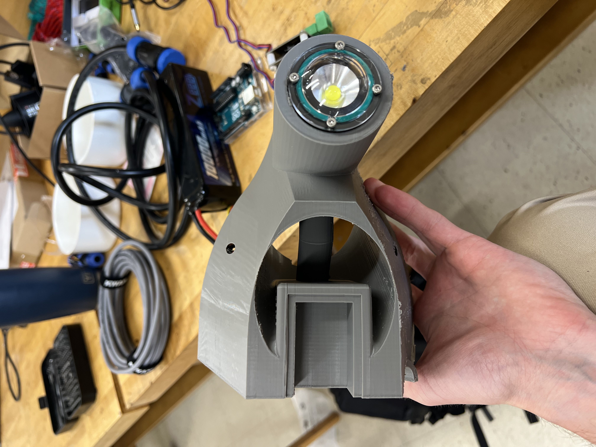
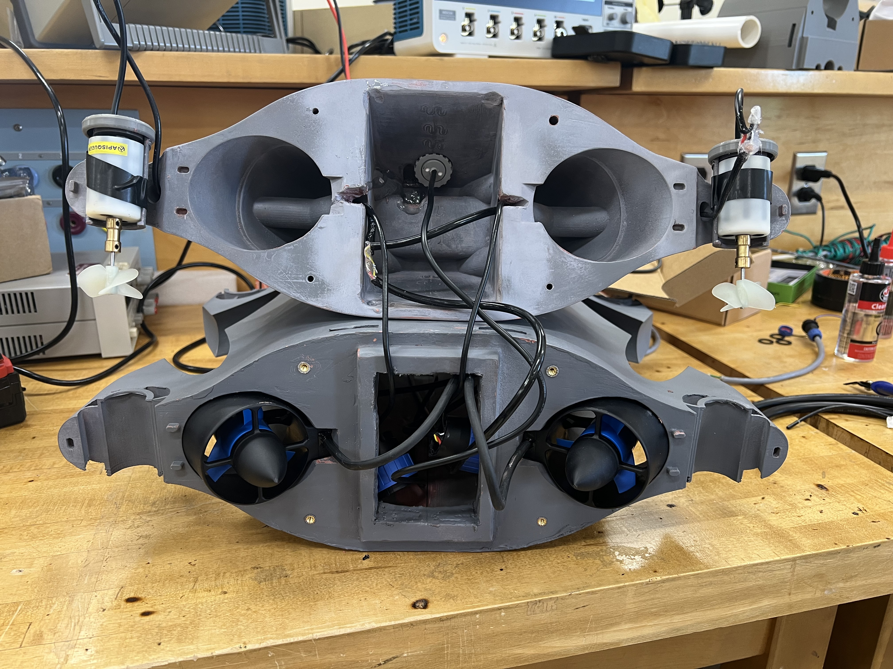
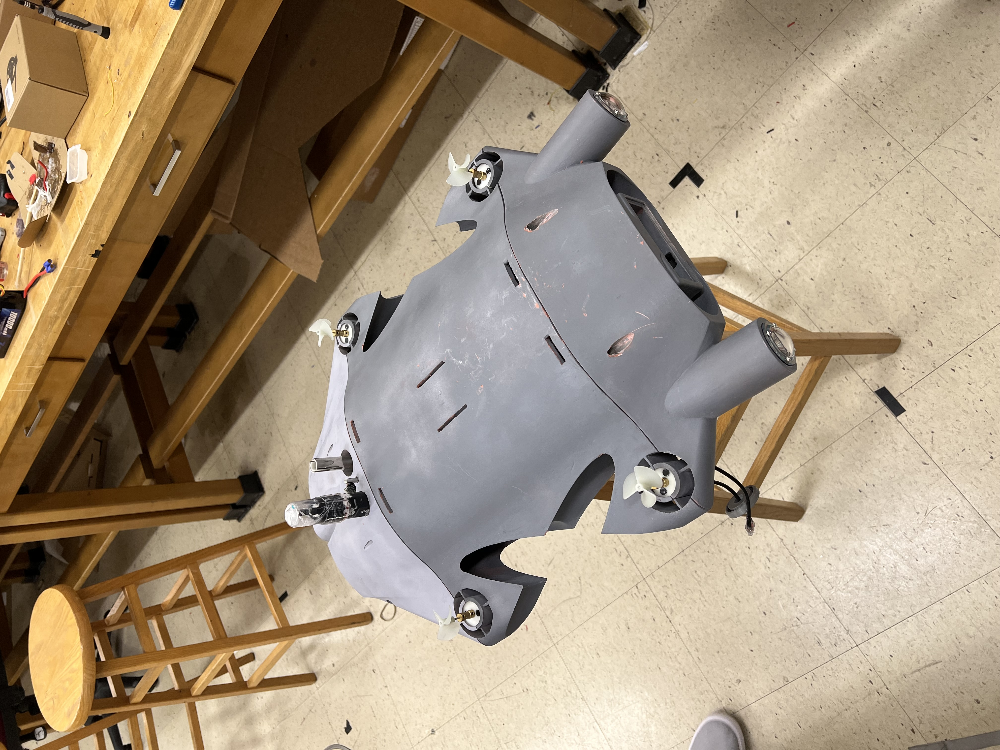

Inspecting the inside of municipal and industrial water tanks usually means sending divers into confined, dark, sometimes hazardous spaces. SubSpectra was built to make that unnecessary. SubSpectra is a remotely operated vehicle that gives operators live video, environmental data, and fine maneuverability without anyone ever getting wet.
The compute is intentionally split across two boards, each doing what it's good at:
The two communicate over USB serial using structured JSON packets. The split exists because Linux on the Pi is not deterministic and motor control needs precise timing — if the Pi lags or crashes, the Arduino keeps PWM stable.
The propulsion system uses eight thrusters: four large angled thrusters for forward/reverse movement, strafing, and yaw rotation, and four smaller vertical thrusters at the corners for depth control and stabilization. The large thrusters are controlled through ESCs using writeMicroseconds() PWM commands from the Arduino, where 1500 μs is neutral, 2000 μs is forward thrust, and 1000 μs is reverse. The smaller vertical motors are driven through L298N H-bridge motor drivers using standard PWM speed control and directional outputs. This configuration allows the large thrusters to handle operator-controlled movement while the vertical motors continuously assist with leveling and depth stabilization in the background.
An OAK-D Lite stereo camera streams live video to the operator UI over Ethernet, with an OpenCV processing pipeline for future computer vision expansion. Getting this stable meant working through USB bandwidth limitations, Pi undervoltage events under camera load, autofocus quirks, frame latency, and compression tradeoffs.
The custom interface is built in PySide6 with PyQtGraph OpenGL for the 3D vehicle visualization. It shows live video, sensor overlays, motor outputs, latency, and operating mode (manual, stabilize, angle hold, inspection). A simulation mode lets the UI run without hardware connected which became useful for iterating on layout without setting up the full rig.
The mechanical design of SubSpectra was built around a waterproof PVC electronics enclosure integrated into a frame made from custom 3D-printed PETG structural components. The system includes an acrylic front viewing window for the camera, waterproof cable glands and connectors for power and communication lines, externally mounted ESCs to reduce internal heat buildup, and custom mounts for the thrusters and sensors. A significant portion of the fabrication process focused on waterproofing, epoxy sealing, cable routing, pressure resistance, and creating a modular structure capable of withstanding underwater operation while still allowing access for maintenance and future upgrades.
This project reinforced how interconnected every engineering discipline becomes in a real embedded system. Many of the biggest challenges came from integration issues such as Raspberry Pi power instability under camera load, ESC calibration, Ethernet communication latency, sensor drift, IMU stabilization tuning, and debugging PWM signals with an oscilloscope. Solving these problems required understanding hardware, firmware, networking, mechanical design, and power systems together rather than as separate subsystems. The project ultimately taught me the importance of systems-level thinking, iterative testing, and designing for reliability when building a vehicle intended to operate in harsh underwater environments.



Click and drag to rotate, scroll to zoom.